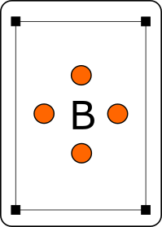
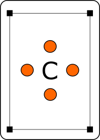
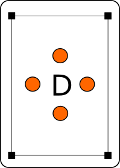
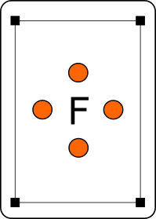
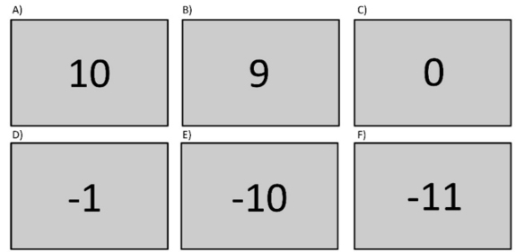

<!DOCTYPE html>
<html>

<head>
    <title>Pavlovian Study</title>
    <meta http-equiv="Content-Type" content="text/html; charset=utf-8">
    <script src="jsPsych/jspsych.js" charset="utf-8"></script>
    <script src="plugins/jspsych-instructions.js" charset="utf-8"></script>
    <script src="plugins/jspsych-quiz-multi-choice.js" charset="utf-8"></script>
    <script src="jsPsych/plugins/jspsych-fullscreen.js" charset="utf-8"></script>
    <script src="jsPsych/plugins/jspsych-html-keyboard-response.js" charset="utf-8"></script>
    <script src="jsPsych/plugins/jspsych-image-keyboard-response.js" charset="utf-8"></script>
    <script src="jsPsych/plugins/jspsych-survey-multi-select.js" charset="utf-8"></script>
    <script src="jsPsych/plugins/jspsych-survey-text.js" charset="utf-8"></script>
    <script src="jsPsych/plugins/jspsych-survey-multi-choice.js" charset="utf-8"></script>
    <script src="jsPsych/plugins/jspsych-survey-likert.js" charset="utf-8"></script>
    <link href="jsPsych/css/jspsych.css" rel="stylesheet" type="text/css">
    </link>
    <link href="study.css" rel="stylesheet" type="text/css">
    </link>
</head>

<body>
    <script>
        var debug = true;
        /* create timeline */
        var timeline = [];

        /* ========= PARAMETERS ==================== */
        var ntraining=5; // number of training trials
        var ntrials = 40; // number of full trials
        var nblocks = 1; // number of blocks (ntrials each)
        var gocost=-1; // go-cost (added to reward in case of go)
        var pwin_if_correct=0.8; // win-contingency
        var rew_magnitude=10; // reward magnitude (multiplied by -1 for losses)

        var duration_fixation=1000;
        var duration_card=1000;
        var duration_prompt=1000;
        var duration_feedback=1000;
        /* ========= /PARAMETERS ==================== */

        var expid="pavgonogo_online";
        var subject = jsPsych.randomization.randomID(12);
        var datetime=Date().toLocaleString();
        // record the condition assignment in the jsPsych data
        // this adds a property called 'subject' to every trial
        jsPsych.data.addProperties({
            subject: subject,
            date: datetime
        });

        // data is being sent to sigmund for storage
        function saveData(name, data) {
            var xhr = new XMLHttpRequest();
            xhr.open('POST', 'http://sigmund.hsl.uit.no/storedata.php'); // 'write_data.php' is the path to the php file described above.
            xhr.setRequestHeader('Content-Type', 'application/json');
            xhr.send(JSON.stringify({ filename: name, filedata: data }));
        }

        if (!debug) {
            timeline.push({
                type: "fullscreen",
                fullscreen_mode: true,
                message: "Welcome! <p>We will now use your entire screen so that you are not distracted by other things.<p>",
                button_label: "Continue"
            });
        }
        var instructions1 = {
            type: "instructions",
            pages: [
                "<div class='instructions'><H1>Welcome to the experiment!</H1><p>\
                    Please sit comfortably ca 60cm from the screen.<p>\
                    While conducting the experiment, you are not allowed to switch windows or do other things on your PC. If you switch windows during the experiment, the experiment will end automatically and you will be prompted to restart.<p>\
                    Press next to continue.</div>",
                "<div class='instructions'><p> \
                    You will play a block of a card game consisting of 160 trials. <p>\
                    Each trial starts with a fixation cross in the middle of the screen followed by one of four cards such as these: <p>\
                    <center>\
                    \
                    \
                    \
                    \
                    </center> <p>\
                    After the card, a question mark appears. This is when you can choose to pick up the card by pressing space or not do anything. <p>\
                    Beware that your response will only get registered while the question mark is on the screen. <p>\
                    Press next to continue.</div>",
                "<div class='instructions'><p> \
                    The combination of a specific card and your action/inaction will earn you points at the end of each trial. <p>\
                    Two of the cards are 'winning cards' which means, the optimal outcome is winning 10 points and the alternative is not getting anything. The remaining two cards are 'losing cards' for which the optimal outcome is not losing anything (0 points) and the alternative is losing 10 points. <p>\
                    In the beginning, however, you do not know which response is correct for each card. You have to learn from trying out different responses to each card to maximize your earnings in the following trials. <p>\
                    Whether a card is a winning or losing card and the right response does not change throughout the block. <p>\
                    Press next to continue.</div>",
                "<div class='instructions'><p> \
                    Picking up a card will cost you 1 point ('go cost') to simulate the cost of a real-life action in comparison to inaction. <p>\
                    Do not worry about the go cost too much while playing, though. If picking up a card is the right response, it will be worth it. <p>\
                    Press next to continue.</div>",
                "<div class='instructions'><p> \
                    The game is made more difficult by probabilistic outcomes.<p>\
                    That means that responding correctly will not guarantee you the optimal outcome. Rather, it will increase the probability of you receiving it. Respectively, the wrong response will decrease the probability of the optimal outcome. <p>\
                    Therefore, there will be trials with confusing outcomes. However, the outcomes are not completely random and you should be able to learn the right action for each card over a few more trials.<p>\
                    Press next to continue.</div>",
                "<div class='instructions'><p> \
                    The task is rather difficult but you must not give up. <p>\
                    Try to find the best strategy to collect as many points as possible! <p>\
                    Press next to continue.</div>",

            ],
            show_clickable_nav: true,
            button_label_previous: "back",
            button_label_next: "next"
        };

        
        timeline.push(instructions1);

        var conditions = ["gowin", "nogowin", "goavoid", "nogoavoid"];
        var cardimg_path="pics/cards/";
        var card_imgs=["1.png", "2.png", "3.png", "4.png"];

        // randomizing condition to card for each block
        // "set0" is the training set
        var condition_to_card=[];
        for (var i = 0; i <= nblocks; i++) { 
            var imgs=jsPsych.randomization.shuffle(card_imgs);
            condition_to_card.push({
                "gowin"    :`${cardimg_path}/set${i}/${imgs[0]}`,
                "nogowin"  :`${cardimg_path}/set${i}/${imgs[1]}`,
                "goavoid"  :`${cardimg_path}/set${i}/${imgs[2]}`,
                "nogoavoid":`${cardimg_path}/set${i}/${imgs[3]}`
            });
        }
        var condition_to_response = {
            "gowin": "go",
            "nogowin": "nogo",
            "goavoid":"go",
            "nogoavoid":"nogo"
        };
        var condition_to_winavoid = {
            "gowin": "win",
            "nogowin": "win",
            "goavoid":"avoid",
            "nogoavoid":"avoid"
        };
        var factors = {
            condition: conditions
        }
        var go_button = 'space';

        /* ========= TRIAL DEFINITION ==================== */
        var fixation = {
            type: 'html-keyboard-response',
            stimulus: '<div style="font-size:60px;">+</div>',
            trial_index: jsPsych.timelineVariable('trial_index'),
            choices: jsPsych.NO_KEYS,
            trial_duration: duration_fixation,
            data: jsPsych.timelineVariable('data'),
            on_finish: function (data) {
                data.trial_part="fixation";
            }
        }
        var card = {
            type: "html-keyboard-response",
            stimulus: jsPsych.timelineVariable('stimulus'),
            choices: jsPsych.NO_KEYS,
            trial_duration: duration_card,
            data: jsPsych.timelineVariable('data'),
            on_finish: function (data) {
                data.trial_part="card";
            }
        }
        var prompt = {
            type: "html-keyboard-response",
            stimulus: '<div style="font-size:60px;">?</div>',
            choices: [go_button],
            trial_duration: duration_prompt,
            response_ends_trial: false,
            data: jsPsych.timelineVariable('data'),
            on_finish: function (data) {
                data.trial_part="prompt";
                var resp;
                if(data.key_press===null){
                    resp="nogo";
                } else {
                    resp="go";
                }
                data.response=resp;
                data.correct=condition_to_response[data.condition]==resp;

                // calculate reward
                data.win_if_correct=jsPsych.randomization.sampleWithReplacement([0,1],1,
                                [1-pwin_if_correct, pwin_if_correct])[0];
                var reward=0;
                if(data.response=="go"){
                    reward+=gocost;
                    if(data.condition=="gowin"){
                        reward+=data.win_if_correct*rew_magnitude;
                    } else if (data.condition=="goavoid"){
                        reward+=(1-data.win_if_correct)*(-1)*rew_magnitude;
                    } else if (data.condition=="nogowin"){
                        reward+=(1-data.win_if_correct)*rew_magnitude;
                    } else if (data.condition=="nogoavoid"){
                        reward+=data.win_if_correct*(-1)*rew_magnitude;
                    }
                } else {
                    if(data.condition=="gowin"){
                        reward+=(1-data.win_if_correct)*rew_magnitude;
                    } else if (data.condition=="goavoid"){
                        reward+=(data.win_if_correct)*(-1)*rew_magnitude;
                    } else if (data.condition=="nogowin"){
                        reward+=(data.win_if_correct)*rew_magnitude;
                    } else if (data.condition=="nogoavoid"){
                        reward+=(1-data.win_if_correct)*(-1)*rew_magnitude;
                    }
                }
                data.reward=reward;
                saveData(expid+"_"+subject, jsPsych.data.get().csv());
            }
        }

        var feedback = {
            type: 'html-keyboard-response',
            trial: jsPsych.timelineVariable('trial'),
            stimulus: function () {
                var d = jsPsych.data.getLastTimelineData().last(3).values()[1];
                //console.log(JSON.stringify(d))

                fb = '<div style="font-size:60px;">'
                fb += d.reward;
                fb += "</div>"
                return (fb);
            },
            choices: jsPsych.NO_KEYS,
            trial_duration: duration_feedback,
            post_trial_gap: 0,
            data: jsPsych.timelineVariable('data'),
            on_finish: function (data) {
                data.trial_part="feedback";
            }
        }
        /* ========= /TRIAL DEFINITION ==================== */

        /* ========= TRAINING  DEFINITION ==================== */
        timeline.push({
            type: "instructions",
            pages: ["Now, there will be a short training block to show you what the game looks like. <p>\
                    We would like you to try to play the game as if it was a real block already. <p>\
                    Do not worry if you are not able to learn the right response to all the cards during the training. The number of trials might be too low for that. <p>\
                    Good luck! <p>"],
            show_clickable_nav: true,
            allow_backward: false,
            button_label_previous: "back",
            button_label_next: "continue"
        });

        var design = jsPsych.randomization.factorial(factors, ntraining);
        for (var i = 0; i < design.length; ++i) {
            var stim = "<div style='font-size:60px;'>";
            stim+="";
            stim+="</div>";
            design[i].stimulus = stim;
            design[i].trial=i;
            design[i].data = {
                trial:i+1,
                condition:design[i].condition,
                gonogo: condition_to_response[design[i].condition],
                winavoid: condition_to_winavoid[design[i].condition],
                training: 1
            }
        }

        var train_block = {
            timeline: [fixation, card, prompt, fixation, feedback],
            timeline_variables: design
        }
        timeline.push(train_block);

        var instructions2= {
            type: "instructions",
            pages: [
                "<div class='instructions'><p> \
                    To make sure you understood the game, please fill in the following quiz. If you answer incorrectly, a hint will pop up and you can answer again. <p> \
                    You will only be allowed to proceed after picking the right answer. <p> \
                    Press next to start the the quiz.</div>"
            ],
            show_clickable_nav: true,
            button_label_previous: "back",
            button_label_next: "next"
        };
        timeline.push(instructions2);
        /* ========= /TRAINING DEFINITION ==================== */

        /* ========= QUIZ DEFINITION ==================== */


        var quiz1_options = ["A", "B", "C", "D", "E", "F"];

        var quiz1_multi_choice = {
            type: 'quiz-multi-choice',
            preamble: "<b>Please check the letter under each statement that corresponds to correct screen</b>\
                    <p></p>",
            question: {
                    prompt: jsPsych.timelineVariable('prompt'), 
                    name: jsPsych.timelineVariable('name'), 
                    options: quiz1_options, 
                    correct: jsPsych.timelineVariable('correct'), 
                    hint: jsPsych.timelineVariable('hint'), 
                    horizontal: true,
                    required:true
            },
        };

        var quiz1_design=[
            {name:"quiz1.1", prompt:"„Not winning” or „Not losing” after picking up a card",
             correct:"D", hint:"Wrong answer. When you pick up a card, you lose one point (-1) and 'not winning' indicates zero points. <br>\
             Please try again..."},
            {"name":"quiz1.2", "prompt":"Losing without picking up a card", 
            correct:"E", hint:"Wrong answer. When you lose, you lose ten points (-10). Not picking up a card has no cost. <br>\
             Please try again..."},
            {name:"quiz1.3", prompt:"Winning without picking up a card",
            correct:"A", hint:"Wrong answer. When you win, you get ten points (10). Not picking up a card has no cost.<br>\
             Please try again..."},
             {name:"quiz1.4", prompt:"Winning when picking up a card",
            correct:"B", hint:"Wrong answer. When you win, you get ten points (10). Picking up a card has a cost of one point (-1).<br>\
             Please try again..."},
             {name:"quiz1.5", prompt:"„Not winning” or „Not losing” without picking up a card.",
            correct:"C", hint:"Wrong answer. When you don't win or lose, you don't get or lose any points (0). Not picking up a card has no cost.<br>\
             Please try again..."},
             {name:"quiz1.6", prompt:"Losing after picking up a card.",
            correct:"F", hint:"Wrong answer. When you lose, you lose ten points (-10). Picking up a card has a cost of one point (-1).<br>\
             Please try again..."}, 
        ]
        var quiz1_block = {
            timeline: [quiz1_multi_choice],
            timeline_variables: quiz1_design
        }
        timeline.push(quiz1_block);

        var quiz2_options = ["True", "False"];

        var quiz2_multi_choice = {
            type: 'quiz-multi-choice',
            preamble: "<b>Decide if the statement is true or false!</b></p>",
            question: {
                    prompt: jsPsych.timelineVariable('prompt'), 
                    name: jsPsych.timelineVariable('name'), 
                    options: quiz2_options, 
                    correct: jsPsych.timelineVariable('correct'), 
                    hint: jsPsych.timelineVariable('hint'), 
                    horizontal: true,
                    required:true
            },
        };

        var quiz2_design=[
            {name:"quiz2.1", prompt:"If I answer correctly, I will always win.",
             correct:"False", hint:"Wrong answer. Sometimes, you can not win or even lose even though you give the correct response.<br>\
             However, it is more likely that you win or avoid losing when giving the correct response.<br>\
             Please try again..."},
            {"name":"quiz2.2", "prompt":"If I answer incorrectly, I will always lose.", 
            correct:"False", hint:"Wrong answer. Sometimes, you can win or avoid losing even though you give the correct response.<br>\
             However, it is less likely that you win or avoid losing when giving the incorrect response. <br>\
             Please try again..."},
            {name:"quiz2.3", prompt:"If I answer correctly, I have good chances to receive the best outcome.",
            correct:"True", hint:"Wrong answer. Even though you are not guarantueed to always get the best outcome with the correct response,\
                your chances for getting it are highest when giving the correct response. <br>\
             Please try again..."},
             {name:"quiz2.4", prompt:"If I answer incorrectly, I have good chances to receive the best outcome.",
            correct:"False", hint:"Wrong answer. Even though you are not guarantueed to always get the best outcome with the correct response,\
                your chances for getting it are low when giving the incorrect response. <br>\
             Please try again..."},
             {name:"quiz2.5", prompt:"For a winning card, an outcome of „-1“ is a bad outcome.",
            correct:"True", hint:"Wrong answer. A winning card should give you 10 points when getting the good outcome.<br>\
             Please try again..."},
             {name:"quiz2.6", prompt:"For a losing card, an outcome of „0” is a bad outcome.",
            correct:"False", hint:"Wrong answer. A losing card can cost you 10 points, so not losing them is a 'good' outcome.<br>\
             Please try again..."},
             {name:"quiz2.7", prompt:"Sometimes I can get „-10” after a winning card.",
            correct:"False", hint:"Wrong answer. A winning card can never cost you any points. It can only win (10) or not win (0).<br>\
             Please try again..."},
             {name:"quiz2.8", prompt:"Sometimes I can get „0” after a losing card.",
            correct:"True", hint:"Wrong answer. A losing card can only cost you points. It can either cause a loss (-10) or no loss (0).<br>\
             Please try again..."},
             {name:"quiz2.9", prompt:"Sometimes I can get „9” after a losing card.",
            correct:"False", hint:"Wrong answer. A losing card can only cost you points. It can either cause a loss (-10) or no loss (0).<br>\
             Please try again..."},
             {name:"quiz2.10", prompt:"Sometimes I can get „-1” after a winning card.",
            correct:"True", hint:"Wrong answer. A winning card can only win points but together with a bad outcome (not winning) and picking up the card (-1), this can result in a total loss of one point.<br>\
             Please try again..."},
             {name:"quiz2.11", prompt:"It is never worth picking up the cards from the table.",
            correct:"False", hint:"Wrong answer. You can significantly increase your winnings when picking up winning cards and picking up avoid-losing cards.<br>\
             Please try again..."},
             {name:"quiz2.12", prompt:"It is always worth picking up the cards from the table.",
            correct:"False", hint:"Wrong answer. You can significantly increase your winnings when leaving the right cards on the table.<br>\
             Please try again..."}
        ]
        var quiz2_block = {
            timeline: [quiz2_multi_choice],
            timeline_variables: quiz2_design
        }
        timeline.push(quiz2_block);

        
        /* ========= /QUIZ DEFINITION ==================== */


        /* ========= EXPERIMENT DEFINITION ==================== */
        timeline.push({
            type: "instructions",
            pages: [
                "<div class='instructions'><H1>Good luck!</H1><p>\
                    Now the actual experiment will start. <p>\
                    Press next to start the experiment.</div>"
            ],
            show_clickable_nav: true,
            button_label_previous: "back",
            button_label_next: "next"
        });

        var instru_before_block={
            type: "instructions",
            pages: [
                "<div class='instructions'><H1>Break!</H1><p>\
                    You can now take a short break. <p>\
                    The next block of the game will have the same rules as the previous one but the cards will be new.  <p>\
                    Press next to start the next block of the experiment.</div>"
            ],
            show_clickable_nav: true,
            button_label_previous: "back",
            button_label_next: "next"
        };

        // block loop
        for(var blockix=1; blockix<=nblocks; blockix++){
            var design = jsPsych.randomization.factorial(factors, ntrials);

            // trial loop
            for (var i = 0; i < design.length; ++i) {
                var stim = "<div style='font-size:60px;'>";
                stim+="";
                stim+="</div>";
                design[i].stimulus = stim;
                design[i].trial=i;
                design[i].data = {
                    trial:i+1,
                    block:blockix,
                    condition:design[i].condition,
                    gonogo: condition_to_response[design[i].condition],
                    winavoid: condition_to_winavoid[design[i].condition],
                    training: 0
                }
            }

            var exp_block = {
                timeline: [fixation, card, prompt, fixation, feedback],
                timeline_variables: design
            }
            timeline.push(instru_before_block);
            timeline.push(exp_block);
        }
        /* ========= /EXPERIMENT DEFINITION ==================== */


        // FINALIZE
        //==================================================================================
        if (!debug) {
            timeline.push({
                type: "fullscreen",
                fullscreen_mode: false,
                message: "Thank you for participating!<p>Press 'exit' to exit the full-screen mode.",
                button_label: "exit"
            });
        }

         /* start the experiment */
        jsPsych.init({
            timeline: timeline,
            on_finish: function () {
                jsPsych.data.displayData("csv");
            },
            on_interaction_data_update: function (data) {
                console.log(JSON.stringify(data))
                if(data.event=="blur"){
                    jsPsych.pauseExperiment();
                } else if(data.event=="focus"){
                    jsPsych.resumeExperiment();
                }
                iadata=jsPsych.data.getInteractionData()
                saveData(expid+"_"+subject+"_interactiondata", iadata.csv());
            }
        });

        function getRandomInt(min, max) {
            min = Math.ceil(min);
            max = Math.floor(max);
            return Math.floor(Math.random() * (max - min + 1)) + min;
        }
    </script>
</body>

</html>